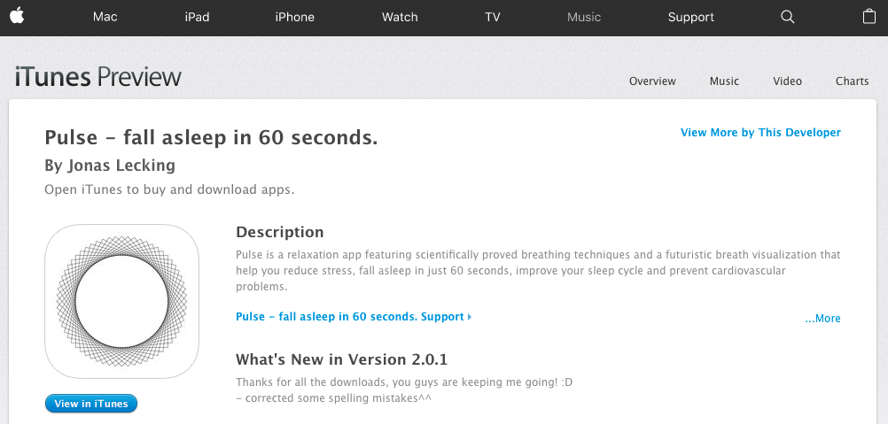

Hynpos: your personal meditation assistant. Hypnos gently guides you through various themed sessions on everything from stress to sleep. It only takes a few minutes to change the rest of your day with Hypnos. Hypnos offers bite-sized meditations to try when you're too busy, and offers specific meditative sessions based on your emotional state.
Anxious? Hypnos provides meditation that has been shown to reduce both daily stress and perceived stress.[1]
Stay focused! Routine meditation has been proven to show improvements in attention, focus and the ability to ignore distractions. [2]
I’ve always had trouble falling asleep. Often times, if I’m tossing and turning for longer than 20 minutes, I just pop the magical pink little pill, Benadryl. This was a pretty consistent habit for most of college, and I didn’t think much off it. A few close friends recently told me about a recent study that linked anticholinergic drugs like Benadryl to dementia. So, obviously the solution was to find a healthy alternative like Prozac or marijuana to help the trouble sleeping.
Just kidding, I just continued taking Benadryl. After I moved to SF, it was even more difficult for me to fall asleep every night — I would stare at the ceiling for hours, before giving in and taking another little pink pill. One night, I was desperate for solutions and I found a beautiful iPhone application that said it would put you to sleep in 60 seconds.

Half awake and delusional, I downloaded it. This is a demo of the app:
As the video shows, the app requires you to be staring at the screen while you’re supposedly falling asleep in 60 seconds. Extreme frustration came out of this, but also the impulse to build something similar to this application for the Amazon Echo. I hacked together a meditation application, or skill, for the Amazon Echo that walks users through sleeping and breathing meditations. You can find the source here.
Developing the app was fairly straight forward. Finding tutorials and documentation for how to get things running with Amazon’s suite of products wasn’t difficult. There were a few frustrating parts:
1. Forcing the developer to use the developer dashboard to input JSON code for utterances, the intent schema, and custom slot types. Would have been a much smoother experience if I could upload my own files in a specific format for those.
2. I went through 3 rounds of certification reviews before I was approved, and sometimes I didn’t do anything to change a specific problem and it was resolved on the next review. It doesn’t look like I’m the only one experiencing this
3. Upon looking at the template python code, I thought that there must have been an easier way to organize and structure the code. Thankfully, I found Flask-Ask, and, having used Flask before, I found developing much more intuitive.
My app doesn’t actually help me with my sleeping troubles. In the process of building this I realized I should probably just accept that there isn’t a great technological solution to my sleeping problems. In fact, distancing myself from technology is probably the best solution for this problem — turning off the glowing rectangles for a little while before sleeping and taking a walk, reading, or hang out with friends have worked well for me lately.